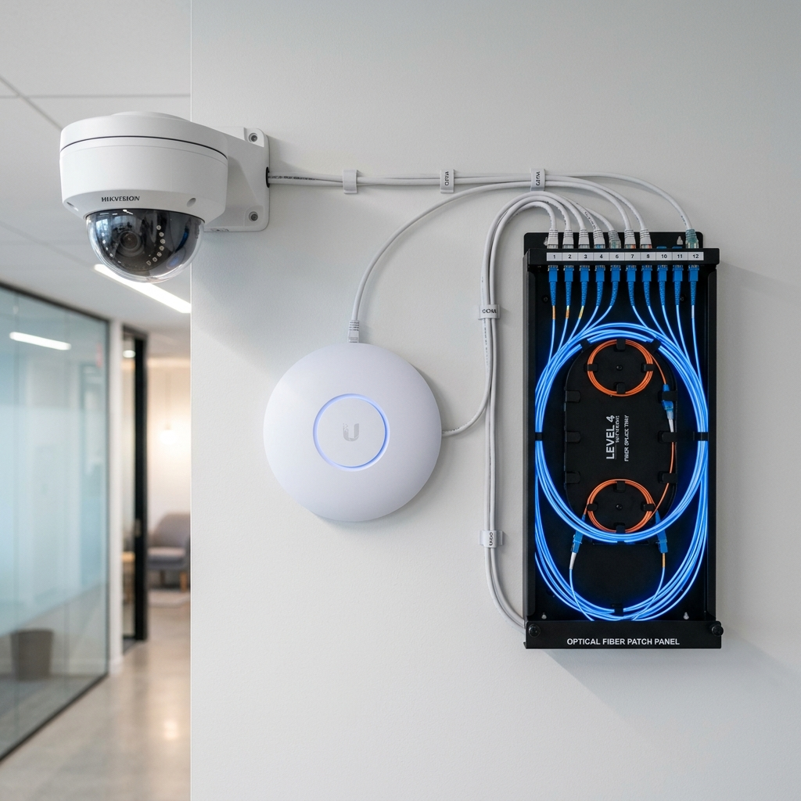
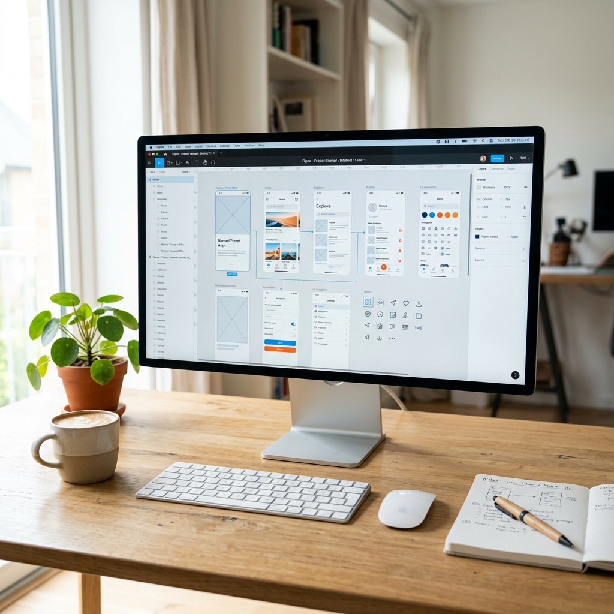

Automation
IT Engineering, Network, QA Services
Muhamad Tomi Tobuhita
IT Engineer & Network Specialist
I build reliable, scalable, and secure IT infrastructure solutions, combining strong network engineering, quality assurance services, and modern technology practices to ensure high-performance, stable, and efficient systems.
About Me
Technologies I Work With
Network Infrastructure

Telecommunication
UI/UX Design Web Development
Web Development
 Android Development
Android Development
 Desktop Development
Desktop Development